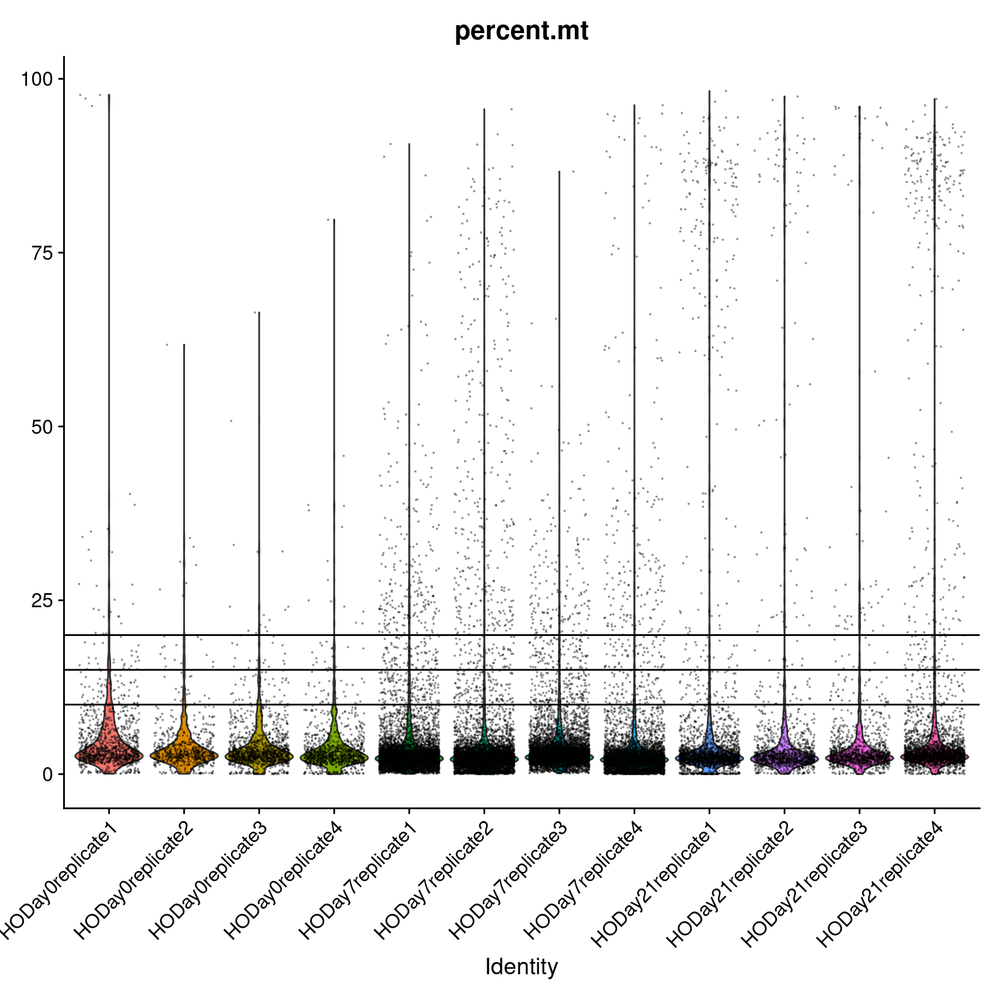

Workflow Overview

Introduction
As discussed at the start of the workshop, single-cell experiments using 10x Chromium instrument aim to have droplets with one cell plus one bead. However this is an inherently imperfect process and there are other important considerations like how healthy or intact the cell was at the time of measurement.
In this section, our goal is to use filtering thresholds to remove “cells” that were poorly measured, not cells at all, or included more than one cell.
Similar to many other areas of research, there are often gaps between how single-cell data is presented versus the reality of running an analysis. For example, only the final filtering thresholds might be reported in a paper but our process for choosing those is likely to be more iterative and include some trial and error.
Objectives
- Discuss QC measures and learn how to calculate and plot them.
- Discuss cell-filtering approaches and apply them to our dataset.
Adding metadata
We’re going to alter and add some columns to meta.data to ease some downstream analysis and plotting steps. This will often be necessary, as sample names contain combined information about phenotypes. Let’s take a look at the first few rows again, to reacquaint ourselves.
head(geo_so@meta.data)
orig.ident nCount_RNA nFeature_RNA
HODay0replicate1_AAACCTGAGAGAACAG-1 HODay0replicate1 10234 3226
HODay0replicate1_AAACCTGGTCATGCAT-1 HODay0replicate1 3158 1499
HODay0replicate1_AAACCTGTCAGAGCTT-1 HODay0replicate1 13464 4102
HODay0replicate1_AAACGGGAGAGACTTA-1 HODay0replicate1 577 346
HODay0replicate1_AAACGGGAGGCCCGTT-1 HODay0replicate1 1189 629
HODay0replicate1_AAACGGGCAACTGGCC-1 HODay0replicate1 7726 2602
We can add arbitrary per-cell information to this table such as:
- Summary statistics, such as percent mitochondrial reads for each cell.
- Batch, condition, etc. for each cell.
- Cluster membership for each cell.
- Cell cycle phase for each cell.
- Other custom annotations for each cell.
First, we’ll make orig.ident a factor in the correct order of the days so that our plots display in chronological order. Next, we’ll make a copy of the meta.data data frame so we are free to make mistakes, and then extract the day and replicate information.
# Make metadata more granular, this is a quality of life thing
orig.ident_levels = apply(
expand.grid(c('HO'), c('replicate1', 'replicate2', 'replicate3', 'replicate4'), c('Day0','Day7','Day21')),
MARGIN = 1, FUN = function(row){paste(row[1], row[3], row[2], sep = '.')})
tmp_meta = geo_so@meta.data
tmp_meta$orig.ident = gsub('HO', 'HO.', tmp_meta$orig.ident)
tmp_meta$orig.ident = gsub('rep', '.rep', tmp_meta$orig.ident)
tmp_meta$orig.ident = factor(tmp_meta$orig.ident, levels = orig.ident_levels)
# Add day information
tmp_meta$day = factor(str_split(tmp_meta$orig.ident, pattern = '[.]', simplify = TRUE)[,2], levels = c('Day0', 'Day7', 'Day21'))
# Add replicate column
tmp_meta$replicate = str_split(tmp_meta$orig.ident, pattern = '[.]', simplify = TRUE)[,3]
Taking a look at our handiwork:
head(tmp_meta)
orig.ident nCount_RNA nFeature_RNA
HODay0replicate1_AAACCTGAGAGAACAG-1 HO.Day0.replicate1 10234 3226
HODay0replicate1_AAACCTGGTCATGCAT-1 HO.Day0.replicate1 3158 1499
HODay0replicate1_AAACCTGTCAGAGCTT-1 HO.Day0.replicate1 13464 4102
HODay0replicate1_AAACGGGAGAGACTTA-1 HO.Day0.replicate1 577 346
HODay0replicate1_AAACGGGAGGCCCGTT-1 HO.Day0.replicate1 1189 629
HODay0replicate1_AAACGGGCAACTGGCC-1 HO.Day0.replicate1 7726 2602
day replicate
HODay0replicate1_AAACCTGAGAGAACAG-1 Day0 replicate1
HODay0replicate1_AAACCTGGTCATGCAT-1 Day0 replicate1
HODay0replicate1_AAACCTGTCAGAGCTT-1 Day0 replicate1
HODay0replicate1_AAACGGGAGAGACTTA-1 Day0 replicate1
HODay0replicate1_AAACGGGAGGCCCGTT-1 Day0 replicate1
HODay0replicate1_AAACGGGCAACTGGCC-1 Day0 replicate1
Now that we’re satisfied that we have what we want, let’s slide this table into geo_so@meta.data:
# Assign the updated metadata to that in the Seurat object
geo_so@meta.data = tmp_meta
# Set the Idents(geo_so) to the new orig.ident
Idents(geo_so) = 'orig.ident'
head(geo_so@meta.data)
orig.ident nCount_RNA nFeature_RNA
HODay0replicate1_AAACCTGAGAGAACAG-1 HO.Day0.replicate1 10234 3226
HODay0replicate1_AAACCTGGTCATGCAT-1 HO.Day0.replicate1 3158 1499
HODay0replicate1_AAACCTGTCAGAGCTT-1 HO.Day0.replicate1 13464 4102
HODay0replicate1_AAACGGGAGAGACTTA-1 HO.Day0.replicate1 577 346
HODay0replicate1_AAACGGGAGGCCCGTT-1 HO.Day0.replicate1 1189 629
HODay0replicate1_AAACGGGCAACTGGCC-1 HO.Day0.replicate1 7726 2602
day replicate
HODay0replicate1_AAACCTGAGAGAACAG-1 Day0 replicate1
HODay0replicate1_AAACCTGGTCATGCAT-1 Day0 replicate1
HODay0replicate1_AAACCTGTCAGAGCTT-1 Day0 replicate1
HODay0replicate1_AAACGGGAGAGACTTA-1 Day0 replicate1
HODay0replicate1_AAACGGGAGGCCCGTT-1 Day0 replicate1
HODay0replicate1_AAACGGGCAACTGGCC-1 Day0 replicate1
Quality Metrics
Cell Ranger is a first-pass filter to determine what is a “cell” and what is not. It only considers one sample at a time, and does not consider the cells relative to one another.
Let’s dig deeper to determine when a droplet might contain two cells, a very stressed cell, or some technical issue in the library preparation. We will use three metrics to determine low-quality cells based on their expression profiles (reference).
- The total number of UMIs detected. Cells with a small number of UMIs detected may indicate loss of RNA during library preparation via cell lysis or inefficient cDNA capture / amplification. Cells with relatively high number of UMIs detected may indicate a doublet.
- The number of expressed features, defined as number of genes with non-zero counts. Cells with very few measured genes are likely to be of low-quality, and may distort downstream variance estimation or dimension reduction steps.
- The proportion of reads mapped to the mitochondrial genome. High proportions of mitochondrial transcripts may indicate a damaged cell, the measure of which may also distort downstream analysis steps.
The number of UMIs detected (nCount) and number of expressed features (nFeature) are already given in the meta data table.
Why total UMIs instead of total reads?
Since a single-cell inherently contains a limited amount of RNA molecules, a higher amount of PCR amplification is required to generate the final sequencing library.
Since PCR can skew proportions of initial input materials, specific sequences are included in the initial capture probes called unique molecule identifiers (UMIs). As each initial probe has a different UMI sequence, each RNA captured will be tagged with a different UMI, which allows those initial RNAs and subsequent PCR duplicates to be identified and duplicates collapsed as part of the initial processing by CellRanger.
Other meanings of nFeatures
For other single-cell data types, nFeatures would represent what’s being measured in that experiment. For single-cell ATAC-seq, nFeatures would represents the total number of peaks (e.g. accessible areas of DNA) per cell.
Percent mitochondrial reads
The PercentageFeatureSet() function enables us to quickly determine the counts belonging to a subset of the possible features for each cell. Since mitochondrial transcripts in mouse begin with “mt”, we will use that pattern to count the percentage of reads coming from mitochondrial transcripts.
# We use "mt" because this is mouse, depending on the organism, this might need to be changed
geo_so$percent.mt = PercentageFeatureSet(geo_so, pattern = '^mt-')
# Use summary() to quickly check the range of values
summary(geo_so$percent.mt)
Min. 1st Qu. Median Mean 3rd Qu. Max.
0.000 1.817 2.582 5.281 3.865 98.244
Just looking at the summary, we can see that there are some cells with a high percentage of mitochondrial reads.
Identifying low-quality cells
To identify low-quality cells, it’s helpful to visualize the QC metrics across all cells and samples to understand the the distributions. Let’s plot nFeature_RNA, nCount_RNA, and percent.mt.
Visualizing QC metrics
A violin plot can help show the distributions of a quantity across multiple samples. Seurat has a built-in function, VlnPlot() to quickly generate the plots we seek. As we make our plots, we’ll save them to a file so we have them handy outside of R, perhaps to include in a report or to share with collaborators.
Let’s begin with a violin plot of nFeature_RNA for only one sample, HO.Day21.replicate1:

A violin plot is similar to a box plot, but it shows the density of the data at different values. Here the individual points are the cells from HO.Day21.replicate1 and the y-axis is the value of nFeature_RNA for that cell. The violin part of the function is essentially showing the density of the cells at different values of nFeature_RNA.
Now let’s look at the nFeature_RNA violin plot across all the samples.
VlnPlot(geo_so, features = 'nFeature_RNA', assay = 'RNA', layer = 'counts') + NoLegend()

ggsave(filename = 'results/figures/qc_nFeature_violin.png', width = 12, height = 6, units = 'in')
We observe what look like systematic differences between the days. Day 7 appears to have many cells with a low number of genes measured, but also many cells with a higher number of genes measured. Let’s continue with the nCount_RNA plot.
VlnPlot(geo_so, features = 'nCount_RNA', assay = 'RNA', layer = 'counts') + NoLegend()

ggsave(filename = 'results/figures/qc_nCount_violin.png', width = 12, height = 6, units = 'in')
We observe a similar systematic difference between the days in the total UMI counts per cell, with Day 0 having fewer depth overall. There is an outlier cell in HODay0replicate1, with over 100K unique UMIs detected. This cell is very likely a doublet. Finally, lets plot the percent.mt.
VlnPlot(geo_so, features = 'percent.mt', assay = 'RNA', layer = 'counts') + NoLegend()

ggsave(filename = 'results/figures/qc_mito_violin.png', width = 12, height = 6, units = 'in')
We see that most samples have cells with a majority of mitochondrial reads <25%, but many samples have cells with >25%. We’ll want to make sure to filter out these cells.
Generally, many tutorials use a cutoff of 5-10% mitochondrial. However, for some experiments high mitochondrial reads would be expected (such as in cases where the condition/treatment or genotype increases cell death), then a relaxed threshold would be necessary to preserve biologically relevant cells. In our case, the cells were collected as part of an injury model, perhaps justifying a more lenient percent mitochondrial read filter.
Cell counts
It’s a good idea to record how many cells we started with in our experiment, and how many cells we have after filtering. So before we discuss filtering further, let’s record the number of cells per sample.
cell_counts_pre_tbl = geo_so@meta.data %>% count(orig.ident, name = 'prefilter_cells')
cell_counts_pre_tbl
orig.ident prefilter_cells
1 HO.Day0.replicate1 1183
2 HO.Day0.replicate2 689
3 HO.Day0.replicate3 1310
4 HO.Day0.replicate4 1053
5 HO.Day7.replicate1 5765
6 HO.Day7.replicate2 6020
7 HO.Day7.replicate3 6285
8 HO.Day7.replicate4 5166
9 HO.Day21.replicate1 2321
10 HO.Day21.replicate2 1322
11 HO.Day21.replicate3 1275
12 HO.Day21.replicate4 2827
It appears that Cell Ranger called many more cells in HODay0replicate1 than the other samples. Based on the QC visualization, probably erroneously so.
Using fixed thresholds
After looking at the plots of nFeature_RNA, nCount_RNA, and percent.mt, we could decide to consider cells with <500 genes per cell, and >25% mitochondrial reads as low-quality, and filter the cells using the subset() function. Sorkin et al. chose these thresholds:
We filtered out cells with less than 500 genes per cell and with more than 25% mitochondrial read content.
We could preview what the resulting cell counts would be with these thresholds:
subset(geo_so, subset = nFeature_RNA > 500 & percent.mt < 25)@meta.data %>%
count(orig.ident, name = 'postfilter_cells')
orig.ident postfilter_cells
1 HO.Day0.replicate1 1049
2 HO.Day0.replicate2 615
3 HO.Day0.replicate3 1191
4 HO.Day0.replicate4 943
5 HO.Day7.replicate1 4928
6 HO.Day7.replicate2 4932
7 HO.Day7.replicate3 4897
8 HO.Day7.replicate4 4242
9 HO.Day21.replicate1 2000
10 HO.Day21.replicate2 1182
11 HO.Day21.replicate3 1166
12 HO.Day21.replicate4 2470
Using adaptive thresholds
For this workshop we will use the above fixed thresholds to match the publication, but another option is to remove low-quality cells adaptively. This approach assumes that most of the cells are of acceptable quality. For more information see the relevant section in Bioconductor’s online book: Orchestrating Single-Cell Analysis (link).
Removing low-quality cells
Let’s remove the cells with nFeature_RNA <= 500 and percent.mt >= 25.
geo_so = subset(geo_so, subset = nFeature_RNA > 500 & percent.mt < 25)
geo_so
An object of class Seurat
26489 features across 29615 samples within 1 assay
Active assay: RNA (26489 features, 0 variable features)
1 layer present: counts
Note that the subset() command uses an expression in terms of the cells we want to keep. Now we’ll take a look at the cells per sample post-filtering:
cell_counts_post_tbl = geo_so@meta.data %>% count(orig.ident, name = 'postfilter_cells')
cell_counts_post_tbl
orig.ident postfilter_cells
1 HO.Day0.replicate1 1049
2 HO.Day0.replicate2 615
3 HO.Day0.replicate3 1191
4 HO.Day0.replicate4 943
5 HO.Day7.replicate1 4928
6 HO.Day7.replicate2 4932
7 HO.Day7.replicate3 4897
8 HO.Day7.replicate4 4242
9 HO.Day21.replicate1 2000
10 HO.Day21.replicate2 1182
11 HO.Day21.replicate3 1166
12 HO.Day21.replicate4 2470
Looking at the total number of cells per sample is helpful to understand both how the called “cells” compare to what was expected for the experiment. It also allows us to determine the impact of our filtering thresholds. Let’s combine the pre and post tables:
cell_counts_tbl = cell_counts_pre_tbl %>% left_join(cell_counts_post_tbl, by = 'orig.ident')
cell_counts_tbl
orig.ident prefilter_cells postfilter_cells
1 HO.Day0.replicate1 1183 1049
2 HO.Day0.replicate2 689 615
3 HO.Day0.replicate3 1310 1191
4 HO.Day0.replicate4 1053 943
5 HO.Day7.replicate1 5765 4928
6 HO.Day7.replicate2 6020 4932
7 HO.Day7.replicate3 6285 4897
8 HO.Day7.replicate4 5166 4242
9 HO.Day21.replicate1 2321 2000
10 HO.Day21.replicate2 1322 1182
11 HO.Day21.replicate3 1275 1166
12 HO.Day21.replicate4 2827 2470
Let’s also write this table to a file.
write_csv(cell_counts_tbl, file = 'results/tables/cell_filtering_counts.csv')
Save our progress
Let’s save this filtered form of our Seurat object. It will also include our changes to the meta.data:
saveRDS(geo_so, file = 'results/rdata/geo_so_filtered.rds')
Summary
In this section we:
- Discussed the big three quality metrics:
nFeatures, nCounts, and percent.mt.
- Visualized these metrics across cells / samples to help identify low-quality cells.
- Filtered low-quality cells using fixed thresholds.
Next steps: Normalization
These materials have been adapted and extended from materials listed above. These are open access materials distributed under the terms of the Creative Commons Attribution license (CC BY 4.0), which permits unrestricted use, distribution, and reproduction in any medium, provided the original author and source are credited.
